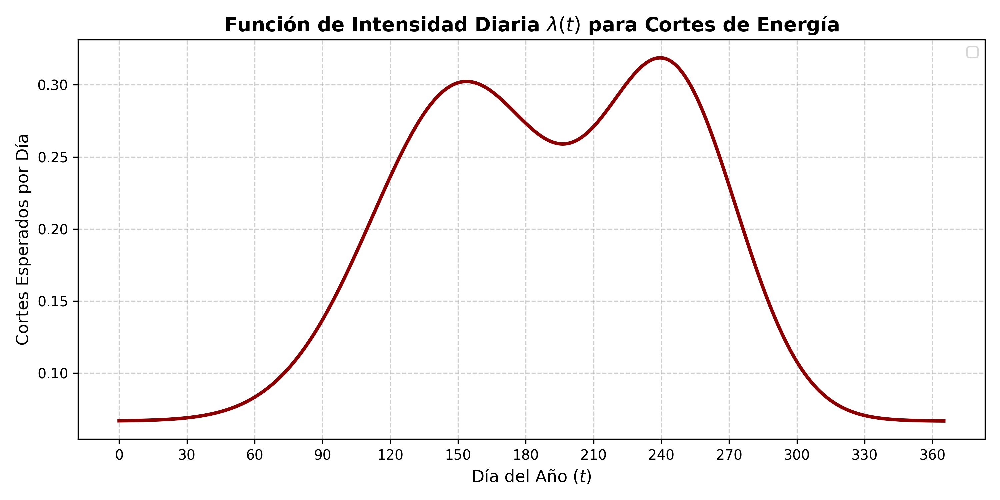

3 Estudio de Caso: Calibración de Parámetros y Fallas Eléctricas
3.1 Motivación y Contexto del Estudio
El presente estudio de caso consolida el marco teórico y metodológico de nuestra investigación aplicándolo a un escenario real y altamente crítico: la red de frío para la preservación de vacunas en Tuxtla Gutiérrez, Chiapas. Debido a las altas temperaturas de la región y a la vulnerabilidad de la infraestructura eléctrica ante eventos climáticos, los refrigeradores institucionales de vacunas se enfrentan a una dificultad operativa constante.
Para que nuestra simulacion sea valida, no podemos usar la Ecuación Diferencial Estocástica (EDE) con números aleatorios sin fundamento. En esta sección, calibraremos todos los parámetros de nuestro modelo. Primero, determinaremos la frecuencia de los cortes de energía basándonos en datos oficiales de la Comisión Federal de Electricidad (CFE), modelándolos a través de un Proceso de Poisson No Homogéneo. Posteriormente, utilizaremos la física del enfriamiento para deducir numéricamente los parámetros de la EDE a partir de las especificaciones termodinámicas reales de los refrigeradores.
3.2 Datos Base (CFE) e Indicadores de Confiabilidad
El objetivo fundamental es modelar la tasa de ocurrencia de interrupciones del suministro eléctrico en el punto específico de Tuxtla Gutiérrez donde se ubicaría el refrigerador de vacunas. Los datos de partida provienen de la Comisión Federal de Electricidad (CFE) (Comisión Federal de Electricidad 2024), la cual evalúa la continuidad del suministro a través de dos indicadores internacionales de confiabilidad:
SAIFI (Índice de la Frecuencia de Interrupción, en número): El indicador SAIFI mide la frecuencia con que se interrumpe el servicio a los usuarios por causas propias del transportista y se calcula evalúa como: \[ SAIFI = \frac{\sum \text{Número total de interrupciones por usuario}}{\text{Número total de usuarios}} \]
SAIDI (Índice de Duración Promedio de Interrupción, en minutos): El inicador SAIDI mide en minutos el tiempo que los usuarios del servicio de energía eléctrica no cuentan con servicio por causas atribuibles al transportista y se evalúa como: \[ SAIDI = \frac{\sum \text{Duración total de las interrupciones sufridas por usuario}}{\text{Número total de usuarios}} \]
Mediante una solicitud de información pública de transparencia dirigida a la CFE, se obtuvo el registro histórico del promedio mensual de interrupciones y su duración para el municipio de Tuxtla Gutiérrez.
| Año | Número de interrupciones promedio por mes | Duración Promedio de las interrupciones (Horas) |
|---|---|---|
| 2019 | 25 | 2.02 |
| 2020 | 42 | 1.73 |
| 2021 | 47 | 2.03 |
| 2022 | 40 | 2.59 |
| 2023 | 49 | 2.23 |
| 2024 | 43 | 2.39 |
| 2025 | 38 | 2.02 |
Para este modelo, se toma como línea base el comportamiento del año 2024, el cual indica un promedio de 43 cortes por mes. Esto resulta en un promedio anual a nivel municipal de:
\[43 \text{ cortes/mes} \times 12 \text{ meses} = 516 \text{ cortes/año}\]
3.3 Corrección de Escala Espacial (Factor \(\kappa_{espacial}\))
3.3.1 Justificación de la Reducción de Escala
El valor de 516 cortes al año es un dato agregado de todo el municipio. En la modelación aplicada, utilizar directamente este valor para un solo refrigerador implicaría asumir que el edificio clínico sufre más de un apagón diario, lo cual no es físicamente real. Este error ocurre al ignorar que un edificio está conectado a un solo nodo de la red, no a todos simultáneamente.
Para solucionar esto, introducimos un factor de escala espacial. De acuerdo con el Programa para el Desarrollo del Sistema Eléctrico Nacional (PRODESEN) y los diagramas de infraestructura del Centro Nacional de Control de Energía (CENACE) (Secretaría de Energía 2024), la mancha urbana de Tuxtla Gutiérrez está alimentada de manera sectorizada por exactamente 8 subestaciones principales de distribución (Tuxtla Céntrica, Oriente, Poniente, Terán, Tuxtla Norte, Tuxtla Dos, Mactumatzá y Real del Bosque).
3.3.2 La Esperanza Matemática Local
Asumiendo que las fallas de transmisión se distribuyen de manera uniforme sobre estas infraestructuras, el riesgo que absorbe el edificio de interés (la subestación Tuxtla Norte, encargada de alimentar la zona de hospitales y laboratorios de la Colonia Maya) corresponde a un octavo del total municipal.
\[\mathbb{E}[N_{local}] = \frac{516 \text{ cortes}}{8 \text{ subestaciones}} = 64.5 \approx 64 \text{ cortes al año}\]
Al ajustar al entero más cercano, establecemos una base realista de 64 interrupciones esperadas al año para nuestra simulación.
3.4 Distribución Temporal de las Fallas
Las interrupciones no ocurren de manera homogénea a lo largo del año (es decir, no se presentan exactamente 5.33 cortes idénticos cada mes). La variabilidad mensual depende directamente de los factores climáticos estacionales de la región. Para no asignar los apagones de manera aleatoria, utilizamos el comportamiento documentado en el Informe Anual de la CFE 2024 (Comisión Federal de Electricidad 2024), específicamente en su página 82, donde se registra la evolución de los indicadores de continuidad del servicio a lo largo de los meses.
| Mes | SAIDI Acumulado (Horas) | SAIFI Acumulado |
|---|---|---|
| Enero | 0.998 | 0.013 |
| Febrero | 1.110 | 0.017 |
| Marzo | 1.285 | 0.022 |
| Abril | 2.793 | 0.027 |
| Mayo | 4.120 | 0.037 |
| Junio | 5.774 | 0.053 |
| Julio | 6.557 | 0.065 |
| Agosto | 7.905 | 0.080 |
| Septiembre | 8.592 | 0.096 |
| Octubre | 9.063 | 0.103 |
| Noviembre | 9.314 | 0.106 |
| Diciembre | 10.812 | 0.113 |
Dado que el informe de la CFE publica el indicador SAIFI de forma acumulada, es necesario calcular la diferencia marginal (\(\Delta\)) respecto al mes anterior para aislar el peso estadístico de cada mes de forma individual:
\[ \Delta \text{SAIFI}_i = \text{SAIFI}_i - \text{SAIFI}_{i-1} \]
Para distribuir los 64 cortes anuales calculados para la subestación local respetando esta estacionalidad, aplicamos una regla de tres simple. Suponiendo que el valor total del SAIFI al final del año (\(0.113\)) representa el 100% de las fallas (equivalente a los 64 cortes), entonces el incremento mensual generado en cada periodo (\(\Delta \text{SAIFI}_i\)) representara una fracción directamente proporcional de cortes. Expresado de forma general para cualquier mes \(i\), la asignación viene dada por:
\[ \text{Cortes}_i = \left( \frac{\Delta \text{SAIFI}_i}{\text{SAIFI}_{total}} \right) \times \mathbb{E}[N_{local}] \]
Sustituyendo los valores de nuestro escenario (\(\text{SAIFI}_{total} = 0.113\) y \(\mathbb{E}[N_{local}] = 64\)), la ecuación del modelo es:
\[ \text{Cortes}_i = \left( \frac{\Delta \text{SAIFI}_i}{0.113} \right) \times 64 \]
Al hacer este cálculo y redondeando al entero más cercano (realizando un ajuste para mantener la conservación de la suma total en 64), obtenemos la distribución estacional empírica de fallas:
| Mes | \(\Delta\) SAIFI (Mensual) | Cortes Exactos Calculados | Cortes Asignados (Redondeo) |
|---|---|---|---|
| Enero | 0.013 | 7.36 | 7 |
| Febrero | 0.004 | 2.26 | 2 |
| Marzo | 0.005 | 2.83 | 3 |
| Abril | 0.005 | 2.83 | 3 |
| Mayo | 0.010 | 5.66 | 6 |
| Junio | 0.016 | 9.06 | 9 |
| Julio | 0.012 | 6.79 | 7 |
| Agosto | 0.015 | 8.49 | 8 |
| Septiembre | 0.016 | 9.06 | 9 |
| Octubre | 0.007 | 3.96 | 4 |
| Noviembre | 0.003 | 1.70 | 2 |
| Diciembre | 0.007 | 3.96 | 4 |
El análisis de la Tabla 3 revela con claridad los dos momentos estacionales de mayor vulnerabilidad y frecuencia de cortes en el suministro eléctrico de la región. El pico más severo se registra en Junio (9 cortes), un fenómeno ocasionado por las altas temperaturas extremas registradas en Tuxtla Gutiérrez durante la primavera-verano, las cuales provocaron una saturación en la red de distribución eléctrica debido al uso masivo y simultáneo de sistemas de aire acondicionado. El segundo periodo crítico ocurre durante Agosto y Septiembre (8 y 9 cortes respectivamente), coincidiendo directamente con el máximo histórico de la temporada de lluvias, tormentas tropicales y huracanes en el Sureste mexicano, eventos climáticos que suelen derribar líneas de alta tensión y afectar transformadores locales. En contraste, la época invernal se consolida como el periodo de máxima estabilidad en el servicio.
3.5 Modelado del Proceso de Poisson No Homogéneo (PPNH)
Para integrar estas interrupciones eléctricas dentro de la Ecuación Diferencial Estocástica (EDE) en tiempo continuo \(t\), donde \(t \in [0, 365]\) representa los días del año, utilizamos un Proceso de Poisson No Homogéneo, cuya intensidad instantánea de eventos \(\lambda(t)\) varía en función del tiempo para absorber la estacionalidad climática.
El modelo se construye mediante la suma de una tasa base constante y dos funciones de perturbación gaussianas no normalizadas. La elección de núcleos gaussianos obedece a dos razones analíticas fundamentales:
- Transición Teórica Suave: Los fenómenos climáticos (como una ola de calor o la época de huracanes) no inician ni terminan de forma abrupta. Una gaussiana permite modelar la transición gradual de las estaciones sin introducir discontinuidades de salto que volverían inestable la resolución numérica de la EDE.
- Correlación Física Estacional: Permite alinear y concentrar el mayor riesgo de que la EDE salte al estado de falla eléctrica (apagón) exactamente en los días donde el clima ambiental exterior es más adverso.
La función analítica propuesta para la intensidad diaria de fallas es:
\[\lambda(t) = \lambda_{base} + A_1 \exp\left(-\frac{(t - \mu_1)^2}{2\sigma_1^2}\right) + A_2 \exp\left(-\frac{(t - \mu_2)^2}{2\sigma_2^2}\right)\]
Para calibrar estos coeficientes con los datos empíricos de Tuxtla Gutiérrez (2024), se realiza el siguiente desglose analítico:
Tasa Base (\(\lambda_{base} = 0.0667\)): Representa el riesgo mínimo de fondo debido a fallas fortuitas o mantenimiento de la red, independiente del clima. Se calcula desde los meses más estables (febrero y noviembre, con 2 cortes al mes). Al dividir este valor, obtenemos la tasa diaria: \[\lambda_{base} = \frac{2 \text{ cortes}}{30 \text{ días}} \approx 0.0667 \text{ cortes/día}\]
Medias Temporales (\(\mu_1 = 152\) y \(\mu_2 = 244\)): Ubican el centro máximo de los picos de riesgo. El primer pico se centra a principios de junio (el 1 de junio equivale al día 152 del año), alineándose con el inicio del verano más caluroso. El segundo se centra a inicios de septiembre (día 244), el momento históricamente más activo de la temporada de huracanes.
Amplitudes (\(A_1 = 0.2333\) y \(A_2 = 0.2333\)): Capturan la altura máxima de la campana en los días críticos. Como junio y septiembre registraron 9 cortes mensuales, la tasa en su pico es de \(9/30 = 0.30\) cortes/día. Dado que la tasa base ya aporta \(0.0667\), la magnitud neta que debe sumar la gaussiana es la diferencia: \(0.30 - 0.0667 = 0.2333\).
Varianzas Estacionales (\(\sigma_1 = 40\) y \(\sigma_2 = 30\)): Controlan el ancho temporal de las afectaciones. Para la ola de calor, se asigna una desviación estándar de \(40\) días (varianza \(2\sigma_1^2 = 3200\)) para garantizar que la campana sea lo suficientemente ancha como para cubrir desde finales de abril (cuando inician las altas temperaturas) hasta mediados de julio. Para las lluvias, una desviación estándar de \(30\) días (varianza \(2\sigma_2^2 = 1800\)) modela una perturbación que cubre por completo agosto y septiembre, extendiéndose hacia octubre.
Sustituyendo cada coeficiente calibrado, la función de intensidad operativa queda definida formalmente como:
\[\lambda(t) = 0.0667 + 0.2333 \exp\left(-\frac{(t - 152)^2}{3200}\right) + 0.2333 \exp\left(-\frac{(t - 244)^2}{1800}\right)\]

3.6 Validación del Modelo (Cálculo Integral)
Por los fundamentos de los Procesos de Poisson No Homogéneos, el número esperado de eventos en cualquier intervalo cerrado \((t_1, t_2]\) está determinado por la integral definida de su función de intensidad:
\[\mathbb{E}[N(t_1, t_2)] = \int_{t_1}^{t_2} \lambda(t) dt\]
Para validar la consistencia analítica de nuestra función \(\lambda(t)\), particionamos el año de 365 días en 12 subintervalos (correspondientes a los días acumulados de cada mes) y resolvemos numéricamente sus respectivas integrales, contrastando el área teórica bajo la curva contra los objetivos empíricos de la CFE:
| Mes | Intervalo de Integración \([t_{i-1}, t_i]\) | Objetivo Empírico (CFE) | Esperanza Integral \(\mathbb{E}[N]\) |
|---|---|---|---|
| Enero | \([0, 31]\) | 7 | 2.10 |
| Febrero | \([31, 59]\) | 2 | 2.06 |
| Marzo | \([59, 90]\) | 3 | 3.26 |
| Abril | \([90, 120]\) | 3 | 5.56 |
| Mayo | \([120, 151]\) | 6 | 8.56 |
| Junio | \([151, 181]\) | 9 | 8.75 |
| Julio | \([181, 212]\) | 7 | 8.16 |
| Agosto | \([212, 243]\) | 8 | 9.40 |
| Septiembre | \([243, 273]\) | 9 | 8.29 |
| Octubre | \([273, 304]\) | 4 | 4.63 |
| Noviembre | \([304, 334]\) | 2 | 2.38 |
| Diciembre | \([334, 365]\) | 4 | 2.10 |
La suma acumulada de las 12 integrales definidas a lo largo de todo el dominio anual arrojó un valor total de 65.25 eventos esperados. Al comparar este resultado con la meta de 64 cortes empíricos, se observa que el modelo añade, en promedio, una falla anual extra.
Esta desviación hacia arriba es una decisión metodológica deliberada para blindar la simulación de Montecarlo: al ensanchar las campanas de riesgo para cubrir desde abril hasta octubre de manera ininterrumpida, el modelo genera un escenario ligeramente más conservador y severo que la simple estadística aislada. Esto garantiza que las proyecciones de estrés térmico sobre la red de frío no subestimen el peligro real al que estarán sometidos los biológicos de la OMS durante las estaciones críticas en Tuxtla Gutiérrez.
3.7 Distribución Log-Normal de las Duraciones de las Fallas
Una vez modelada la frecuencia estocástica con la que ocurren las interrupciones eléctricas, el siguiente componente crítico para el simulador termodinámico consiste en determinar cuánto tiempo dura cada apagón (\(D\)). La duración de una falla es una variable aleatoria continua estrictamente positiva con una marcada asimetría hacia la derecha (la mayoría de los cortes se resuelven en pocas horas, pero existen eventos atípicos muy prolongados). Por este motivo, la teoría analítica establece que el comportamiento de las duraciones se modela mediante una distribución Log-normal:
\[ D \sim \text{LogNormal}(\mu, \sigma^2) \]
Para calibrar los parámetros de escala \(\mu\) (media de los logaritmos) y de forma \(\sigma\) (desviación estándar de los logaritmos) para cada régimen estacional, es necesario procesar los indicadores empíricos de la CFE bajo un esquema de desagregación temporal.
3.7.1 Desglose Mensual de Horas de Interrupción
De acuerdo con el registro histórico municipal consolidado para el año 2024, la duración promedio general de una interrupción en Tuxtla Gutiérrez fue de \(2.39\) horas por corte. Sabiendo que el factor de escala espacial redujo el riesgo del edificio a una esperanza de \(64\) cortes locales al año, podemos deducir la cantidad total de tiempo que el refrigerador experimentará desabasto eléctrico a lo largo de todo el año:
\[ \text{Horas Totales del Año} = 64 \text{ cortes/año} \times 2.39 \text{ horas/corte} = 152.96 \text{ horas/año} \]
Para distribuir estas \(152.96\) horas anuales entre los 12 meses respetando la estacionalidad de la red, utilizamos el indicador SAIDI acumulado del Informe Anual de la CFE 2024. Primero, calculamos la diferencia marginal (\(\Delta \text{SAIDI}_i\)) para aislar el impacto de cada mes. Posteriormente, mediante una regla de tres simple, equiparamos el SAIDI total acumulado al final del año (\(10.812\) horas) con nuestras \(152.96\) horas de afectación local. La asignación de horas de falla para cada mes viene dada por:
\[ \text{Horas del Mes}_i = \left( \frac{\Delta \text{SAIDI}_i}{10.812} \right) \times 152.96 \]
Finalmente, para conocer la duración promedio esperada de un corte individual en un mes específico (\(E_i\)), se divide el presupuesto de horas asignadas de ese mes entre el número de cortes discretos calculados previamente en la Tabla 3 (\(E_i = \text{Horas del Mes}_i / \text{Cortes}_i\)):
| Mes | SAIDI Acumulado | \(\Delta\) SAIDI | Horas del Mes Calculadas | Cortes del Mes | Duración Media \(E_i\) (Horas) |
|---|---|---|---|---|---|
| Enero | 0.998 | 0.998 | 14.12 | 7 | 2.017 |
| Febrero | 1.110 | 0.112 | 1.58 | 2 | 0.790 |
| Marzo | 1.285 | 0.175 | 2.48 | 3 | 0.827 |
| Abril | 2.793 | 1.508 | 21.33 | 3 | 7.110 |
| Mayo | 4.120 | 1.327 | 18.77 | 6 | 3.128 |
| Junio | 5.774 | 1.654 | 23.40 | 9 | 2.600 |
| Julio | 6.557 | 0.783 | 11.08 | 7 | 1.583 |
| Agosto | 7.905 | 1.348 | 19.07 | 8 | 2.384 |
| Septiembre | 8.592 | 0.687 | 9.72 | 9 | 1.080 |
| Octubre | 9.063 | 0.471 | 6.66 | 4 | 1.665 |
| Noviembre | 9.314 | 0.251 | 3.55 | 2 | 1.775 |
| Diciembre | 10.812 | 1.498 | 21.19 | 4 | 5.298 |
3.7.2 Cálculo Empírico de Medias y Varianzas por Régimen
Para alimentar la conmutación de regímenes de la EDE, agrupamos los meses en las tres temporadas climáticas analizadas. Sin embargo, realizar un promedio aritmético simple entre las duraciones mensuales introduciría un sesgo metodológico, ya que trataría por igual a un mes con 9 cortes que a uno con solo 2 cortes.
Para resolver esto, calculamos la media empírica (\(\mathbb{E}[D_{reg}]\)) y la varianza empírica (\(\mathbb{V}[D_{reg}]\)) de cada régimen utilizando estadística descriptiva ponderada, donde el peso de cada mes está determinado estrictamente por su número de cortes (\(\omega_i = \text{Cortes}_i\)). Analíticamente, las ecuaciones operativas son:
\[ \mathbb{E}[D_{reg}] = \frac{\sum \omega_i E_i}{\sum \omega_i} = \frac{\text{Total de Horas del Régimen}}{\text{Total de Cortes del Régimen}} \]
\[ \mathbb{V}[D_{reg}] = \frac{\sum \omega_i (E_i - \mathbb{E}[D_{reg}])^2}{\sum \omega_i} \]
Agrupando los datos bajo este criterio de ponderación, se obtienen las siguientes métricas muestrales por temporada: * Régimen de Calor (Mayo, Junio y Julio): Acumula \(22\) cortes y \(53.25\) horas de interrupción, resultando en una duración media de \(\mathbb{E}[D] = 2.420\) horas y una varianza de \(\mathbb{V}[D] = 0.373\). * Régimen de Lluvias (Agosto, Septiembre y Octubre): Suma \(21\) cortes y \(35.45\) horas de interrupción, generando una duración media de \(\mathbb{E}[D] = 1.688\) horas y una varianza de \(\mathbb{V}[D] = 0.343\). * Régimen Base e Invierno (Resto de meses): Concentra \(23\) cortes y \(64.25\) horas, arrojando una duración media de \(\mathbb{E}[D] = 2.793\) horas con una varianza más dispersa de \(\mathbb{V}[D] = 4.650\) debido a la anomalía de abril.
3.7.3 Transformación Analítica a Parámetros Log-Normales
Una vez que conocemos la media aritmética real (\(\mathbb{E}[D]\)) y la varianza geométrica real (\(\mathbb{V}[D]\)) del sistema, debemos mapearlas hacia los parámetros analíticos internos \(\mu\) y \(\sigma\) que requiere la función de distribución de probabilidad en el código de Python.
Por definición matemática, la esperanza matemática y la varianza de una variable aleatoria con distribución Log-normal se rigen por las siguientes dos identidades:
\[ \mathbb{E}[D] = \exp\left(\mu + \frac{\sigma^2}{2}\right) \]
\[ \mathbb{V}[D] = \left[\exp(\sigma^2) - 1\right] \exp(2\mu + \sigma^2) = (\mathbb{E}[D])^2 \left[\exp(\sigma^2) - 1\right] \]
Al resolver este sistema de ecuaciones no lineales de forma algebraica para despejar los parámetros objetivos en función de los momentos estadísticos conocidos, se deducen las fórmulas generales de calibración:
\[ \sigma = \sqrt{\ln\left(1 + \frac{\mathbb{V}[D]}{(\mathbb{E}[D])^2}\right)} \]
\[ \mu = \ln(\mathbb{E}[D]) - \frac{\sigma^2}{2} = \ln\left( \frac{(\mathbb{E}[D])^2}{\sqrt{\mathbb{V}[D] + (\mathbb{E}[D])^2}} \right) \]
Al sustituir las medias y varianzas empíricas ponderadas de cada temporada en estas relaciones analíticas de transformación, obtenemos los parámetros exactos calibrados que gobernará el reloj de simulación de Montecarlo:
| Régimen Estacional | Meses que lo integran | Media Empírica \(\mathbb{E}[D]\) | Varianza Empírica \(\mathbb{V}[D]\) | Parámetro \(\mu\) | Parámetro \(\sigma\) |
|---|---|---|---|---|---|
| Base (Invierno) | Ene, Feb, Mar, Abr, Nov, Dic | 2.793 | 4.650 | 0.7933 | 0.6838 |
| Calor (Ola de Verano) | May, Jun, Jul | 2.420 | 0.373 | 0.8529 | 0.2485 |
| Lluvias (Ciclones) | Ago, Sep, Oct | 1.688 | 0.343 | 0.4667 | 0.3371 |
3.8 Calibración de la Ecuación Diferencial Estocástica (EDE)
Enlazando la dinámica de la red eléctrica con la termodinámica, recordamos que la temperatura interna \(T(t)\) del refrigerador está gobernada por:
\[dT(t) = \kappa(\alpha(t)) [\theta(\alpha(t)) - T(t)] dt + \sigma(\alpha(t)) dW(t) + \gamma dN_{puerta}(t)\]
Para reflejar fielmente a un equipo institucional que cumple el estándar de la OMS (como el modelo Haier HBC-150), calibraremos los coeficientes.
3.8.1 Régimen 1: Operación Normal (\(\alpha(t) = 1\))
Ocurre cuando hay energía eléctrica y el compresor funciona.
Temperatura de Consigna (\(\theta_1\)): Se establece en \(5^\circ \text{C}\), el centro ideal del rango normativo de seguridad (2°C a 8°C).
Velocidad de Enfriamiento (\(\kappa_1\)): Representa la capacidad del motor para recuperar la temperatura. Se calibra en \(\kappa_1 = 0.1188\).
Ruido del Compresor (\(\sigma_1\)): El motor prende y apaga intermitentemente para mantener los 5°C. Para que el 99.7% del tiempo las fluctuaciones se mantengan en un rango de \(\pm 3^\circ \text{C}\) (regla empírica de 3 sigmas del proceso Ornstein-Uhlenbeck), calculamos \(\sigma_1 = \sqrt{0.2376} \approx 0.487\).
3.8.2 Régimen 2: Falla Eléctrica (\(\alpha(t) = 2\))
Se activa cuando el Proceso de Poisson dispara un apagón.
Temperatura Exterior (\(\theta_2\)): Para evaluar el caso crítico en Tuxtla Gutiérrez, fijamos una temperatura ambiental extrema de \(43^\circ \text{C}\).
Inercia Térmica (\(\kappa_2\)): Los refrigeradores OMS cuentan con paquetes de hielo como “masa térmica”. El equipo Haier garantiza un Holdover Time (tiempo de autonomía) de 63.8 horas a 43°C antes de rebasar los 8°C. Usando la solución analítica de enfriamiento determinista de 5°C a 8°C: \[8 = 43 + (5 - 43) e^{-\kappa_2 (63.8)}\] Al despejar, obtenemos un valor sumamente bajo de \(\kappa_2 \approx 0.00128\), lo que demuestra la alta efectividad del aislamiento térmico.
Volatilidad Externa (\(\sigma_2\)): Sin compresor encendido, las variaciones obedecen solo a micro-filtraciones de aire. Establecemos un ruido menor: \(\sigma_2 = 0.05\).
3.8.3 Perturbaciones Discretas: Apertura de Puertas (\(N_{puerta}(t)\))
Las aperturas de puerta son provocadas activamente por el personal de enfermería para sacar o guardar biológicos.
Tasa de Aperturas: Se modelan con un Proceso de Poisson Homogéneo que ocurre solo durante el horario laboral.
Impacto de la Apertura (\(\gamma\)): Asignamos un incremento térmico inmediato de \(+0.5^\circ \text{C}\) por evento. Esta es la perturbación que altera bruscamente la temperatura.